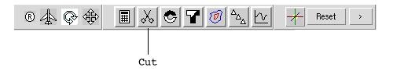

Step 3
Rotate the camera around the cursor until you see the outline of the
combustor from the front. Zoom in (right mouse button + drag) until the
outline occupies almost the whole window.
Step 4
Press the Cut button on the toolbar.

Last modified: Mon Dec 3 10:45:21 EST 2001